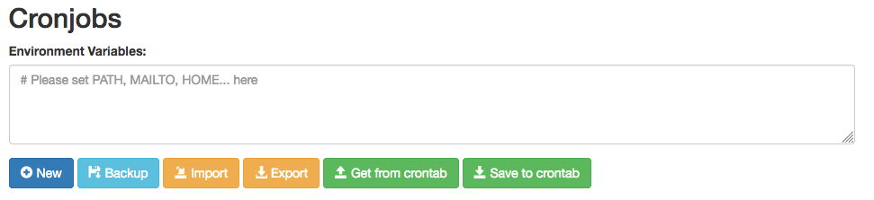
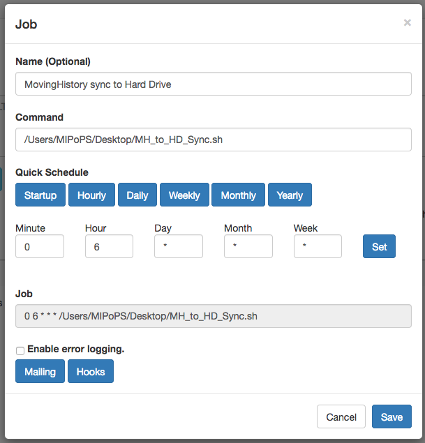

MIPoPS Microservices
One liners and automation tools from Moving Image Preservation of Puget SoundThis page is an evolving library of some of the most common commands used for manipulating digital objects at Moving Image Preservation of Puget Sound.
The following commands are primarily written in bash. We've also included the most common FFmpeg commands we use. FFmpeg is a powerful tool for manipulating audiovisual files. For an excellent, in-depth resource for using FFmpeg in the command line, check out ffmprovsir.
Contributors: Ari Lavigne, Libby Hopfauf, Andrew Weaver, and everyone who contributed to the ffmprovisor project (where the ffmpeg commands presented here were sourced).
Moving Image Preservation of Puget Sound is a a non-profit formed in 2014 that enables archives, libraries, and museums, as well as arts, science and heritage organizations, to convert their legacy video recordings to digital formats, allowing new access to our region’s cultural heritage. The consortium was founded by Rachel Price, executive director; Anne Frantilla, City Archivist at Seattle Municipal Archives; Hannah Palin, Film Archives Specialist at the University of Washington Libraries, Special Collections; and Carol Shenk, formerly King County Archivist at King County Archives. After three years of planning, MIPoPS received its 501(c)(3) status in 2015. MIPoPS supports videotape digitization and preservation by heritage organizations with neither the resources nor expertise to address these at-risk materials.
Creating Shell Scripts
First, open TextMate. In the first line of the new document, copy and paste #!/bin/bash. This is called a shebang.
Next, either copy and paste in or type the command you'd like to run.
Finally, select "Save As" and make sure the file extension is .sh. Once you save the file, you should see a notificiation in TextMate telling you that the file is now executable.
To use a shell script, simply drag the file into the terminal and hit enter, or copy and past the file path location into the terminal and hit enter.
Moving and Copying Files
This is a loop script that will find all .MP4s in a directory and copy them into a new directory elsewhere. Useful for copying all access files from a directory and putting them into an Access copies folder.
First, cd into the directory holding the access files you want to copy. At MIPoPS, this is usually the Participating Institutions directory.
cd /MIPoPS/Desktop/PIs/Institution1
Next, run the following shell script:
#!/bin/bash
while read TARGET
do rsync -av "$TARGET" /EXAMPLE/PATH/ACCESSFILES
done < <(find "$PWD" -iname "*.mp4")
This script could be modified to look for and move other file types by modifing the input between the final quotation marks in the last line. Replacing "*.mp4" with "*.dv" would return all files ending in .dv. Replacing "*.mp4" with "SAM_2019_*.*" would move all files that have the naming convention "SAM_2019" of any file type. The asterix is a wildcard.
This script runs a loop that identifies all MP4s in a directory, then moves them into directories that have the same name.
At MIPoPS, this is useful for moving all access copies into their respective directories. For example, SMA_5795.mp4 would be moved into the directory SMA_5795
First, run: cd /PATH/TO/TARGET/DIR
At MIPoPS, this might look like: cd /MIPoPS/Desktop/Partner1
Next, run the following shell script:
#!/bin/bash
for f in *.mp4; do
[[ -f "$f" ]] || continue
dir="${f%.*}"
mv "$f" "$dir"
done
Change container (rewrap)
ffmpeg -i /PATH/TO/input_file.ext -c copy -map 0 /PATH/TO/output_file.ext
This script will rewrap a video file. It will create a new video video file where the inner content (the video, audio, and subtitle data) of the original file is unchanged, but these streams are rehoused within a different container format.
- ffmpeg
- starts the command
- -i /PATH/TO/input_file.ext
- path and name of the input file. To copy the full path of a file on a Mac, right-click on the file, then, while in the right-click menu, hold down the "OPTION" key to reveal the "Copy as Pathname" option.
- -c copy
- copy the streams directly, without re-encoding.
- -map 0
- map all streams of the input to the output.
By default, FFmpeg will only map one stream of each type (video, audio, subtitles) to the output file. However, files may have multiple streams of a given type - for example, a video may have several audio tracks for different languages. Therefore, if you want to preserve all the streams in the original, it's necessary to use this option. - /PATH/TO/output_file.ext
- path and name of the output file. To copy the full path of a file on a Mac, right-click on the file, then, while in the right-click menu, hold down the "OPTION" key to reveal the "Copy as Pathname" option.
The new container you are rewrapping to is defined by the filename extension used here, e.g. .mkv, .mp4, .mov.
ffmpeg -i /PATH/TO/input_file -f rawvideo -c:v copy /PATH/TO/output_file.dv
This script will take a video that is encoded in the DV Codec but wrapped in a different container (such as MOV) and rewrap it into a raw DV file (with the .dv extension). Since DV files potentially contain a great deal of provenance metadata within the DV stream, it is necessary to rewrap files in this method to avoid unintentional stripping of this metadata.
- ffmpeg
- starts the command
- -i /PATH/TO/input_file
- path and name of the input file. To copy the full path of a file on a Mac, right-click on the file, then, while in the right-click menu, hold down the "OPTION" key to reveal the "Copy as Pathname" option.
- -f rawvideo
- this tells FFmpeg to pass the video stream as raw video data without remuxing. This step is what ensures the survival of embedded metadata versus a standard rewrap.
- -c:v copy
- copy the DV stream directly, without re-encoding.
- /PATH/TO/output_file.dv
- tells FFmpeg to use the DV wrapper for the output. To copy the full path of a file on a Mac, right-click on the file, then, while in the right-click menu, hold down the "OPTION" key to reveal the "Copy as Pathname" option.
Transcode a Video
ffmpeg -i /PATH/TO/input_file.MOV -c:v ffv1 -level 3 -coder 0 -pix_fmt yuv422p10 -slices 16 -slicecrc 1 -c:a pcm_s24le /PATH/TO/output_file.MKV
To run this script as a loop, first cd into the directory holding the .MOVs you want to transcode.
Then, execute the following:
#!/bin/bash
for i in *.mov;
do ffmpeg -i ${i} -c:v ffv1 -level 3 -coder 0 -pix_fmt yuv422p10 -slices 16 -slicecrc 1 -c:a pcm_s24le ${i%.*}.mkv;
done
Trim a video
ffmpeg -i /PATH/TO/input_file -ss 00:02:00 -to 00:55:00 -c copy -map 0 /PATH/TO/output_file
This command allows you to create an excerpt from a file without re-encoding the audiovisual data.
- ffmpeg
- starts the command
- -i /PATH/TO/input_file
- path, name and extension of the input file. To copy the full path of a file on a Mac, right-click on the file, then, while in the right-click menu, hold down the "OPTION" key to reveal the "Copy as Pathname" option.
- -ss 00:02:00
- sets in point at 00:02:00
- -to 00:55:00
- sets out point at 00:55:00
- -c copy
- use stream copy mode (no re-encoding)
- -map 0
- tells FFmpeg to map all streams of the input to the output.
- /PATH/TO/output_file
- path, name and extension of the output file. To copy the full path of a file on a Mac, right-click on the file, then, while in the right-click menu, hold down the "OPTION" key to reveal the "Copy as Pathname" option.
Variation: trim file by setting duration, by using -t instead of -to
ffmpeg -i input_file -ss 00:05:00 -t 10 -c copy output_file
- -ss 00:05:00 -t 10
- Beginning five minutes into the original video, this command will create a 10-second-long excerpt.
Run a loop using VideoAIP
This loop will run VideoAIP on all .mkvs in a directory. Instructions for modifying to accept other extensions is presented below.
#!/bin/bash
while read TARGET
do videoaip -l auto "$TARGET" </dev/null
done < <(find /PATH/TO/DIRECTORY -name '*.mkv')
VideoAIP will try to process any files that it comes across. To ensure VideoAIP only processes the file extensions you've defined, you can replace the last line of the script with:
done < <(find /PATH/TO/DIRECTORY -name '*.mkv' -o -name '*.dv' -o -name '*.mov')
This command will find all .mkv, .dv, and .mov files in the defined directory.
Scheduling a Cron Job
Using Crontab-UI
To use crontab-ui, first install node using:brew install node
Then, install crontab-ui using:npm -install -g crontab-ui
You may need to use sudo when running the command above.
To use: From the terminal, run crontab-ui
You will see the following output:
Node version: [CURRENT VERSION]
Crontab UI is running at http://[IP ADDRESS]
Now, open your web browser and navigate to http://[IP ADDRESS]
From this page, you'll be able to schedule, edit, save, and delete jobs.
Here is the format for a simple Cron Job:
0 22 * * * /Users/MIPoPS/Desktop/BackUp.sh
The first part is 0 22 * * * This is where we schedule the timer. This job will run at 10 pm every evening.
The rest of the line is the command as it would run from the command line. This job would run the BackUp shell script from MIPoPS desktop.
Each asterix represents a unit of time, as follows:
Minute(0-59) Hour(0-24) Day_of_month(1-31) Month(1-12) Day_of_week(0-6)
Use MILITARY TIME!
This cron job will run at minute zero, every hour (i.e. an hourly cron job):
0 * * * * [command]
This is also an hourly cron job but run at minute 15 instead (i.e. 00:15, 01:15, 02:15 etc.):
15 * * * * [command]
This will run once a day, at 2:30am:
30 2 * * * [command]
This will run once a month, on the second day of the month at midnight (i.e. January 2nd 12:00am, February 2nd 12:00am etc.):
0 0 2 * * [command]
If you need help generating the crontab syntax, try using Corntab.
Here is the layout of the Crontab-ui website.

From the Crontab-ui page, click New to describe and create new job. Here is an example of a job that would run the shell script "MH_to_HD_sync.sh" at 6:00am daily.
Hit "Save" when you're finished. Then, click "Save to crontab". This schedules the job. It will now run at the appointed time.
To run the job immediately, click "Run".
To stop the job from running, click "Stop", then click "Save to crontab".
To re-schedule (or resume) a job, click "Start", then click "Save to crontab".
To see what jobs are scheduled to run, from the terminal, run crontab -e. You'll see a list of all jobs that are saved to the crontab.
Dealing with hidden files
Occasionally you may encounter hidden files, especially on hard drives that move between Mac and PC environments. Ususally they don't present a problem. In case they do (like when verifying the contents of a bag), here are two ways to find them:
To see them listed in the terminal / command line (on a Mac):
In the terminal, cd to the directory you want to examine. Then, run:
find $PWD -iname "*._*"
This will list all of the files in the directory that begin with "._". The asterisk represents a wildcard.
To see them in the Finder window (on a Mac):
In the terminal run:
defaults write com.apple.finder AppleShowAllFiles true; killall Finder
The first part of this command changes the settings within macOS to show all files. The second part restarts the Finder.
To reverse this command, replace true with false, then run.
In the terminal / command line (on a Mac):
Run: find $PWD -iname "*._*" -delete
Using Linear Tape Open (LTO) -- UNDER CONSTRUCTION --
The instructions provided are for the macOS!
First, install Homebrew using the instructions provided on their website (it's easy!). You may need to work with your systems or IT department to ensure you've got the necessary permissions to install Homebrew.
Next, you'll be tapping repositories from AMIA Open Source and Puget Sound and Vision. In the terminal, run:
brew tap amiaopensource/amiaos
brew tap pugetsoundandvision/pugetsoundandvision
Now, you'll install ltopers and ltotools. In the terminal, run:
brew install ltopers
brew install ltotools
LTO tapes need to be formatted before they can be used.
In the terminal, run the following command: formatlto
You will be prompted to enter the tape serial identifier. The tape serial format is exactly 6 capital letters and/or numbers (e.g. A00001, A00002, B00001, B00002, etc.) Remember to physically label your tape with the tape serial number!
UNDER CONSTRUCTION
Before you write to tape, you'll need to create a manifest of the content you'll be transferring. To do this, group all of your files into a single location. This can be a directory or a volume.
To create the manifest, run:
ltomanifest -m /PATH/TO/DIRECTORY
The option-m = make manifest.
Creating the manifest can take a significant amount of time, especially if you're writing a large set of files.
UNDER CONSTRUCTION
Mounting the tape
Before you can write, you'll need to mount the tape. Put the tape that you want to write to into the deck (you don't need to push it in all the way).
Then, run:
mountlto
You'll be prompted to enter the tape serial number. The tape should then mount into the deck. The deck can be pretty loud - don't be alarmed!
Once it's fully mounted, you should see the tape appear on the desktop, like you would see an external drive. You can open this in the finder window. Be aware that once you've written files to the tape, it can take the computer a long time to open them because it has to physically reel through the spool of magnetic tape.
Writing data to the tape
Now, open a second terminal window.
Run:
writelto -t TAPESERIALNUMBER /PATH/TO/DIRECTORY
The path above should point to the directory of files you're going to transfer (which will also contain the manifest you made earlier).
This can take a LOT of time, depending on the amount of data you're writing to the tape. It can also be quite loud, as the deck and the tape chug along.
Re-mount the tape using the instructions above for mountlto.
Open a second terminal window. Run:
ltomanifest -c /PATH/TO/MANIFEST/ON/TAPE/tapemanifest.txt
The option -c = confirm manifest. This makes sure that what was transferred to the tape is exactly the same as what you started with. This can take a significant amount of time, depending on the amount of data you're writing to the tape.
Once the manifest has confirmed, the tape will unmount and eject itself.
Mount the tape using mountlto, as described above.
You will see the tape appear on your desktop, or you can navigate to it via the Finder. Locate the file you wish to retrieve, then simply drag and drop or use rsync to copy the file to the new location.
Remember - LTO is not like a regular external hard drive. It will take more time than you may be used to for the file or files you're looking for to appear. The computer has to physically reel through the spool of magnetic tape!